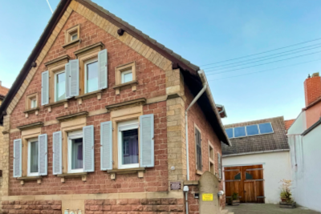

Gästehaus
Seit Herbst 2006 können wir Ihnen unsere Gästezimmer anbieten. Das Gästehaus liegt inmitten der Weinberge, unterhalb des Haardtrandes. Alle Zimmer sind sehr gemütlich eingerichtet. Die Küche und das Esszimmer stehen unseren Gästen immer zur Verfügung. In der angenehm hellen Atmosphäre des Esszimmers wird das Frühstück eingenommen. Gerne können Sie hier einen gemütlichen Fernsehabend in der Gemeinschaft einlegen oder nach einer Wanderung ausruhen und bei einem schönen Glas Wein eine Vesper genießen.

Informationen für unsere Gäste
|
|
|
|
|
- Mitbenutzung der Küche
- Kaffeevollautomat
- Kühlschrank
- Kochmöglichkeit
- Spülmaschine
- Kinderbett für Kleinkinder
- Bettwäsche
- Handtücher
- TV im Gemeinschaftsraum
- TV in allen Zimmern
- Free Wifi
- Grillmöglichkeiten
- Gartenterasse
- Parkmöglichkeiten
Die Zimmer
Hier können Sie die Zimmer des Gästehauses sehen, welches 4 schöne Zimmer, einen Gemeinschaftsraum (Frühstücksraum) und eine Küche beinhaltet. Während das Rieslingzimmer und das Traminerzimmer jeweils ein eigenes Bad haben, teilen sich das Burgundzimmer und das Bacchuszimmer, welche über einen eigenen Flur verbunden sind, ein Bad.
Preise
| Übernachtungen | Riesling & Traminerzimmer | Bacchus & Burgunderzimmer |
|---|---|---|
| im Doppelzimmer | mit je eigenem Bad | mit gemeinsamem Bad |
| 1 Nacht | 90,00 € | 80,00 € |
| 2-3 Nächte | 75,00 € | 65,00 € |
| 4-6 Nächte | 70,00 € | 60,00 € |
| ab 7 Nächte | 60,00 € | 50,00 € |
Die Preise beziehen sich je Doppelzimmer für 2 Personen, inklusive Frühstück, Endreinigung und MwSt.
Hund pro Nach 10€
Wohnmobilstellplätze
Ganz neu für Sie haben wir jetzt Sanitäre Anlagen für Wohnmobil und Wohnwagen gebaut. Sie können bei uns auf unserer Wiese zwischen den Weinbergen übernachten. Bei uns bekommen Sie Strom, ein Bad mit WC und Dusche, einen erholsamen Urlaub und eine vielfältige Weinprobe.


Stellplatz inklusive privatem Badezimmer und Strom
Pro Nach 18€ je Wohnmobil